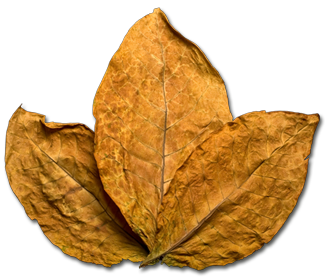
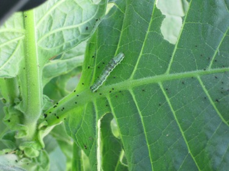

arrow_back

Hasil Identifikasi
Penyakit Rebah Semai dan Busuk Batang

Pengendalian:
a. Kultur Teknis:
Sterilisasi media pembibitan dengan suhu 100 C selama 30 menit, penggunaan pupuk kompos, pengolahan tanah yang intensif